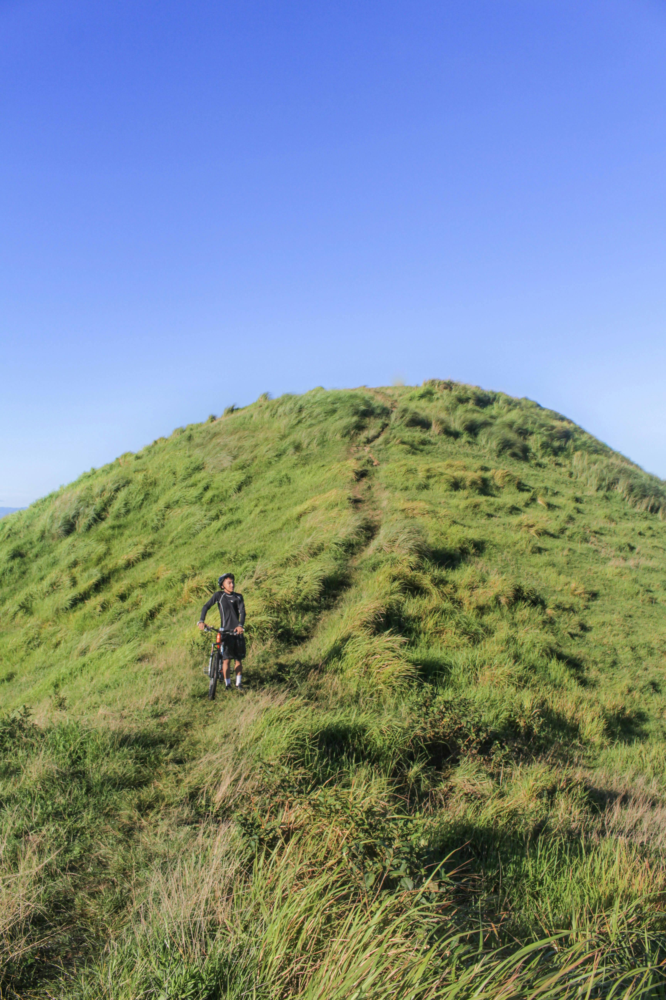

5th august, 2024
A Journey to the Top
Exploring nature offers a deeply enriching experience, connecting us to the world around us in profound ways. Hiking through diverse landscapes, from verdant forests to rugged mountains, provides both physical challenge and stunning vistas. Birdwatching and stargazing allow us to observe the delicate balance of ecosystems and the vastness of the universe, inviting moments of wonder and reflection.
Photography and nature journaling help capture and internalize the beauty and intricacy of our surroundings, revealing details often missed in casual observation. Learning about local plants and animals enhances our understanding and appreciation of the natural world, while participating in conservation efforts ensures that we contribute to its preservation. Finally, spending quiet moments in nature practicing mindfulness can offer a deep sense of peace and connection, reminding us of the harmony that exists in the natural world.

5th august, 2024
Adventures in Cycling and Discovery
As we engage more deeply with nature, it often inspires a shift in perspective about our place in the world. This heightened awareness can lead to a greater sense of interconnectedness with all living things, fostering a profound respect for the environment and its intricate systems. By observing the cycles of life and the resilience of natural habitats, we gain insights into sustainability and the impact of our actions. This awareness can drive us to make more mindful choices in our daily lives, from reducing waste to supporting conservation initiatives. Furthermore, nature often acts as a teacher, offering lessons in patience, adaptability, and the importance of balance. Embracing these lessons can lead to a more harmonious relationship with the world, where we not only enjoy its beauty but also actively contribute to its preservation and well-being.
5th august, 2024
A Journey Through Flowing Beauty
Nature has a unique ability to provide solace and clarity, helping to reduce stress and improve mental well-being. The rhythms of the natural world, whether it’s the gentle rustle of leaves or the steady flow of a river, can foster a sense of calm and perspective. Engaging with nature encourages curiosity and wonder, sparking a lifelong appreciation for the environment. It also fosters a sense of responsibility, as understanding the delicate balance of ecosystems often leads to a commitment to environmental stewardship. Ultimately, exploring nature not only deepens our connection to the world but also enhances our overall quality of life, offering both immediate joy and lasting benefits.
5th august,2024
Crafting a Colorful and Lush Garden
Gardening is more than just cultivating plants; it’s a rewarding practice that connects us with nature and offers numerous benefits for both body and mind. Tending to a garden allows you to engage in a meditative ritual, where planting seeds, nurturing growth, and harvesting produce create a tangible sense of accomplishment and peace. Whether you're growing vibrant flowers, lush vegetables, or aromatic herbs, gardening fosters creativity and patience as you observe the cycles of growth and change. The act of digging in the soil, pruning, and watering not only enhances physical health through exercise but also provides mental clarity and stress relief. Additionally, a garden can serve as a sanctuary, a place of reflection, and a source of joy as you witness the beauty and bounty that your efforts bring forth. Engaging with the natural world through gardening nurtures a deeper appreciation for the environment and can inspire a more sustainable and mindful approach to living.